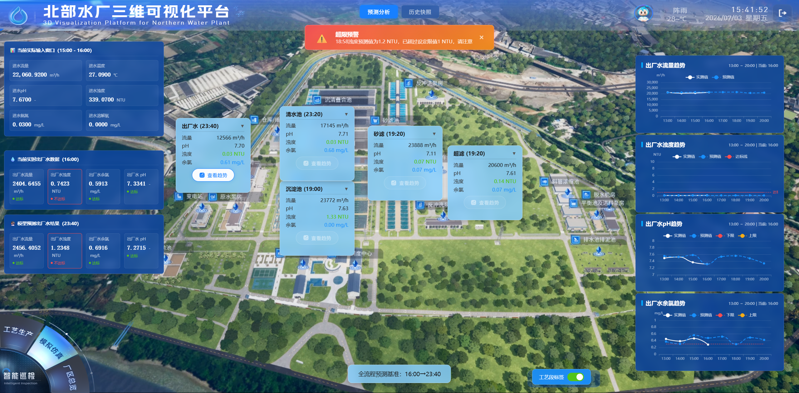
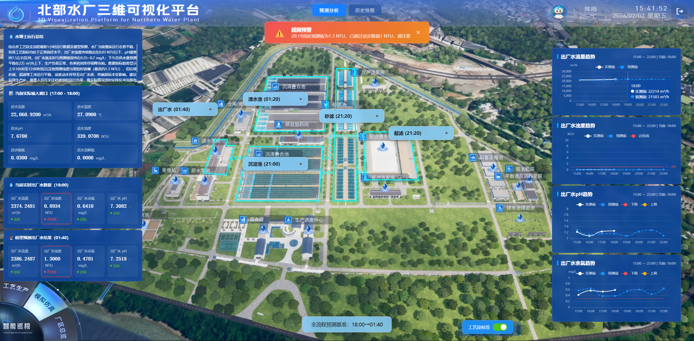
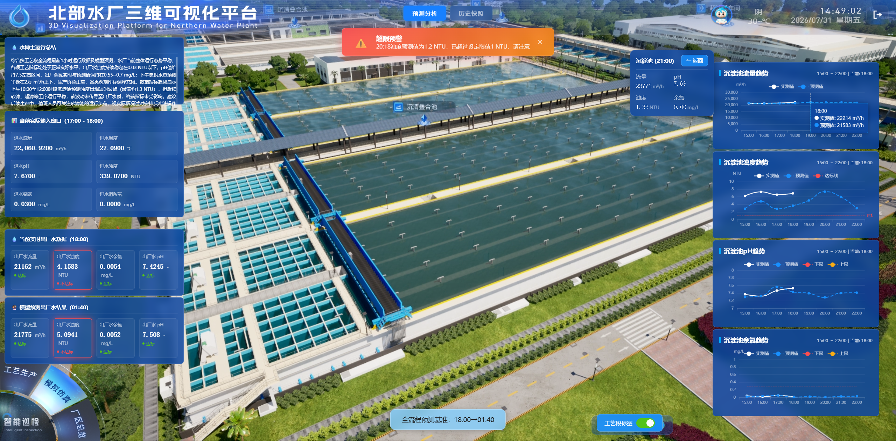
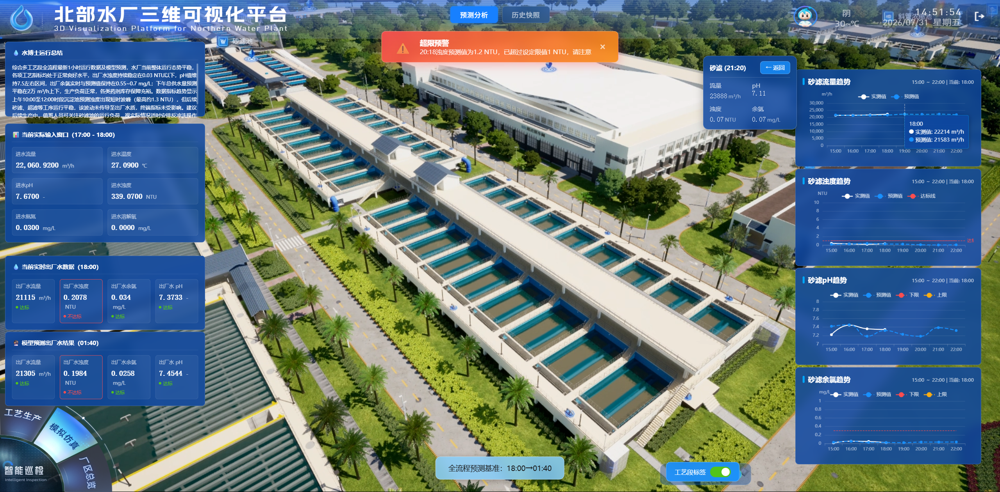
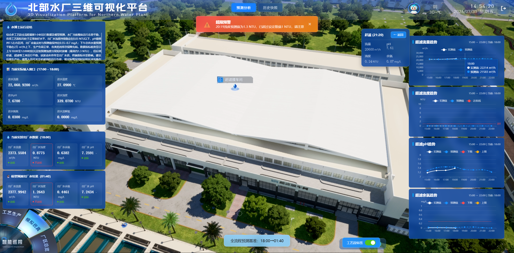
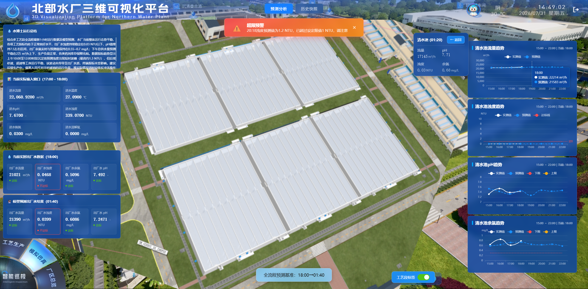
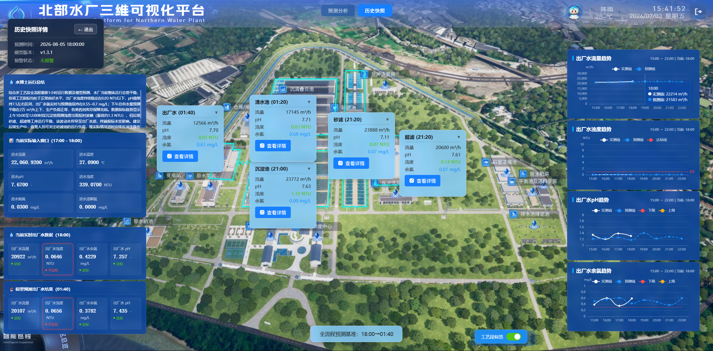

北部水厂三维可视化平台 — 模拟仿真模块 PRD
1. 版本管理
| 版本号 | 更新内容 | 更新日期 |
|---|---|---|
| V1.0 | 新建文档 | 2026-07-28 |
| V1.1 | 1. 增加水博士运行总结 2. 新增下钻聚焦工艺段机制（右侧显示流量/浊度/pH/余氯实测与预测趋势对比图，隐藏卡片，右上方增加趋势数据面板，"返回全景"按钮回到全景视角），按钮"查看趋势"改为"查看详情" 3. 各工艺段阈值参考线补全 4. 全景视角新增沉淀池->砂滤->超滤->清水池->出厂水的三维流程方向示意效果 5. 点击顶部标题栏"预测分析""历史快照"按钮始终重置为对应页面初始状态 6. 补充原型图片 |
2026-08-05 |
2. 模块描述
2.1 背景
本模块为自来水厂三维可视化平台下的模拟仿真功能，基于智慧运营平台-水厂仿真模块的水力、水质仿真模型，结合厂区三维场景，实现水厂多工况模拟推演、水质指标预测、历史运行工况回溯，为工艺调度、应急指挥、生产优化提供可视化决策支撑。
2.2 目标
- 依托水力及水质仿真模型，对水厂生产多工况进行动态推演与趋势预测。
- 提前预演生产方案与应急处置方案，实现工艺优化与应急演练。
- 将预测数据与现场实际运行数据对比，超限自动预警，保障生产决策安全、科学。
2.3 目标用户与应用价值
- 目标用户：工艺调度人员、应急指挥人员。
- 应用价值：面向多工况生产场景，提供沿工艺流程的可视化预测、实际与预测对比、历史工况复盘，辅助调度决策与应急演练。
2.4 布局概述
本模块沿用三维可视化平台的整体布局框架，在通用界面元素基础上叠加模块专属交互组件：
- 保留平台顶部导航栏。
- 保留左下角模块导航栏，并将当前选中模块置为「模拟仿真」。
- 在页面右下方保留工艺段标签的显示/隐藏开关按钮。
3. 功能需求
3.1 预测分析
3.1.1 需求概述
预测分析页展示最近一次预测分析结果，即根据当前时间从历史快照中匹配最近一条快照并呈现其内容。页面以三维水厂场景为背景，叠加浮层交互组件，展示各工艺段水质指标、进水/出水实测与模型预测数据，并通过趋势图可视化指标变化趋势。
页面分为两个视角层级：全景视角与下钻视角。全景视角为默认初始状态，展示全厂三维总览场景，5 个工艺节点卡片沿工艺流程排布，三维场景中以动态流向箭头示意水流方向（沉淀池 → 砂滤 → 超滤 → 清水池 → 出厂水），流动动画循环播放，直观呈现水处理全流程。点击任一卡片"查看详情"按钮后进入下钻视角，镜头聚焦至该工艺段，右侧展示该工艺段的实测与预测趋势对比图。

图：预测分析-全景视角
3.1.2 水博士运行总结
- 在预测分析界面左上方设置"水博士运行总结"面板，展示智能体根据当前预测数据点自动生成的运行分析总结。
- 面板内容：智能体结合当前进水实测数据、各工艺段预测数据及出厂水预测结果，输出运行状态评价、趋势研判与调度建议等文字摘要。
- 业务规则：总结内容由智能体根据当前快照数据点实时生成；快照模式下根据快照数据生成对应总结，数据冻结不更新。
- 交互逻辑：面板始终展示于全景视角左上方；进入下钻视角后面板保持显示，内容不变。
3.1.3 当前实际输入窗口
- 展示进水侧实测输入数据，取值时间窗口为「上一整点 ~ 当前整点」的 1 小时区间（如 16:00~17:00）。
- 指标：进水流量（m³/h）、进水温度（℃）、进水 pH、进水浊度（NTU）、进水氨氮（mg/L）、进水溶解氧（mg/L）。
- 业务规则：数值保留 4 位小数；快照模式从记录读取；该面板始终展示进水数据，不随卡片选中变化。
3.1.4 当前实时出厂水数据
- 展示当前整点时刻（如 17:00）实测出厂水指标：流量、浊度、余氯、pH。
- 每项附状态标签：达标 / 不达标。
- 业务规则：数据时间点为当前整点；数值保留 4 位小数；达标/不达标依据出厂水水质达标判断接口（/api/water-quality-standards/all）返回的上下限判定，超出范围判为「不达标」（红色）。
- 交互逻辑：进入下钻视角后，面板标题联动变为「当前实时{工艺段名}数据」，数据切换为对应下钻工艺段实时值；每项指标右侧显示状态标签。全景视角下默认展示出厂水实时数据。
3.1.5 模型预测出厂水结果
- 展示模型对未来时刻（如 00:40）的预测出厂水指标：流量、浊度、余氯、pH。
- 业务规则：预测时间点取自预测分析接口返回的数据时间；数值保留 4 位小数；达标/不达标依据出厂水水质达标判断接口（/api/water-quality-standards/all）返回的上下限判定，超出范围判为「不达标」（红色）。
- 交互逻辑：进入下钻视角后，面板标题联动变为「模型预测{工艺段名}结果」，预测时间点与数据随下钻工艺段切换；每项指标右侧显示状态标签。全景视角下默认展示出厂水预测结果。
- 每项附状态标签，预测值超阈值时以红色「不达标」高亮标注。
3.1.6 全流程预测展示节点卡片
- 沿工艺流程展示各工艺段节点卡片：沉淀池、砂滤、超滤、清水池、出厂水。
- 卡片绝对定位在三维底图对应工艺段位置，标题括号内为该工艺段对应的数据时间点；全景视角下 5 个卡片均默认展开显示。
- 每个节点显示对应数据时间（取自预测分析接口，如沉淀池 20:00、砂滤 20:20、超滤 20:20、清水池 00:20、出厂水 00:40）及关键指标：流量（m³/h）、pH、浊度（NTU）、余氯（mg/L）。
- 卡片支持展开/收起，提供”查看详情”入口，点击后进入下钻视角；镜头聚焦至该工艺段视角。
- 全流程预测基准：各工艺段的数据时间均取自预测分析接口返回值，形成全流程预测时间区间（如 17:00 -> 00:40），作为页面预测展示的时间基准。
3.1.6.1 业务规则
（1）标题预测时刻
各卡片标题时间直接对接预测分析接口返回的数据时间，前端不做时间计算，仅按接口返回值展示。
| 节点卡片 | 对应工艺段位置 | 时间来源 | 示例（当前 14:00） |
|---|---|---|---|
| 沉淀池 | 絮凝沉淀池（沉清叠合池） | 对接预测分析接口的数据时间 | 17:00 |
| 砂滤 | 砂滤池 | 对接预测分析接口的数据时间 | 17:20 |
| 超滤 | 超滤膜车间 | 对接预测分析接口的数据时间 | 17:20 |
| 清水池 | 清水池（沉清叠合池） | 对接预测分析接口的数据时间 | 21:20 |
| 出厂水 | 送水泵房 | 对接预测分析接口的数据时间 | 21:40 |
（2）数据指标
各工艺段（沉淀池、砂滤、超滤、清水池、出厂水）均包含流量（m³/h）、浊度（NTU）、pH、余氯（mg/L）字段，具体数值均通过接口获取。
3.1.6.2 交互逻辑
| 操作 | 触发区域 | 行为 | 说明 |
|---|---|---|---|
| 卡片折叠 | 卡片展开状态下点击标题行 | 切换为折叠状态，仅显示标题行和展开按钮 | 5 个卡片折叠状态不互斥，可同时存在 |
| 卡片展开 | 卡片折叠状态下点击标题行 | 切换为展开状态，显示数据行与查看详情按钮 | 5 个卡片展开状态不互斥，可同时存在 |
| 查看详情 | 点击卡片底部"查看详情"按钮 | 进入下钻视角：镜头聚焦该工艺段，隐藏 5 个工艺节点卡片，右侧显示该工艺段流量/浊度/pH/余氯的实测与预测趋势对比图，右上方显示该工艺段趋势数据面板 | 点击即触发至下钻视角 |
| 返回全景 | 点击右上角"返回全景"按钮 | 退出下钻视角，镜头回到全景视角，5 个工艺节点卡片全部显示，右上方趋势数据面板隐藏 | 仅在下钻视角下显示该按钮 |
默认状态：5 个卡片均为展开状态，"查看详情"按钮统一为可用状态，页面处于全景视角。

图：收起5个工艺节点卡片
3.1.7 查看详情（下钻视角）
点击任一工艺节点卡片的"查看详情"按钮后，页面从全景视角切换至下钻视角，镜头聚焦至该工艺段三维场景，同时隐藏中间 5 个工艺节点卡片，右侧展示该工艺段的实测与预测趋势对比图，右上方增加该工艺段趋势数据面板。
- 趋势数据面板（右上方）：显示当前下钻工艺段的流量、浊度、pH、余氯的实测值与预测值对比，每项附状态标签（达标/不达标）；面板仅在下钻视角显示，返回全景后隐藏。
- 纵轴单位：流量 m³/h、浊度 NTU、pH 无单位、余氯 mg/L。
- 横轴规则：范围为「当前整点-3 小时 ~ 当前整点+4 小时」，共 8 个整点刻度，格式 HH:00；标注当前时刻基准（如 17:00）；标题栏同一行右侧显示：「当前整点-3 小时」 ~ 「当前整点+4 小时」 | 当前：「当前整点时刻」。
- 双折线规则：实测值为白色实线（仅 -3h~0h 历史段有数据），预测值为蓝色虚线（-3h~+4h 全程有值）；仅出厂水的浊度/pH/余氯趋势图叠加安全阈值线，支持悬停查看数据点与超限点标识。
- 交互逻辑：下钻视角下四图标题与数据均对应当前下钻工艺段；支持 ECharts 原生 tooltip 悬浮查看数值；同步呈现实测与预测数据，支持对比分析偏差；快照模式冻结。
- 返回全景：点击右上角"返回全景"按钮，退出下钻视角，镜头回到全景视角，5 个工艺节点卡片全部显示，右上方趋势数据面板隐藏。
3.1.7.1 沉淀池
- 趋势图内容：沉淀池流量趋势、沉淀池浊度趋势、沉淀池 pH 趋势、沉淀池余氯趋势；标题格式为「沉淀池{指标}趋势」。
- 阈值参考线：沉淀池浊度趋势图显示达标线 1（红色）；pH 趋势图显示下限 6.5（红色）、上限 8.5（黄色）；余氯趋势图显示下限 0.3（红色）、上限 2（黄色）。

图：沉淀池下钻视角
3.1.7.2 砂滤
- 趋势图内容：砂滤流量趋势、砂滤浊度趋势、砂滤 pH 趋势、砂滤余氯趋势；标题格式为「砂滤{指标}趋势」。
- 阈值参考线：砂滤浊度趋势图显示达标线 1（红色）；pH 趋势图显示下限 6.5（红色）、上限 8.5（黄色）；余氯趋势图显示下限 0.3（红色）、上限 2（黄色）。

图：砂滤下钻视角
3.1.7.3 超滤
- 趋势图内容：超滤流量趋势、超滤浊度趋势、超滤 pH 趋势、超滤余氯趋势；标题格式为「超滤{指标}趋势」。
- 阈值参考线：超滤浊度趋势图显示达标线 1（红色）；pH 趋势图显示下限 6.5（红色）、上限 8.5（黄色）；余氯趋势图显示下限 0.3（红色）、上限 2（黄色）。

图：超滤下钻视角
3.1.7.4 清水池
- 趋势图内容：清水池流量趋势、清水池浊度趋势、清水池 pH 趋势、清水池余氯趋势；标题格式为「清水池{指标}趋势」。
- 阈值参考线：清水池浊度趋势图显示达标线 1（红色）；pH 趋势图显示下限 6.5（红色）、上限 8.5（黄色）；余氯趋势图显示下限 0.3（红色）、上限 2（黄色）。

图：清水池下钻视角
3.1.7.5 出厂水
- 趋势图内容：出厂水流量趋势、出厂水浊度趋势、出厂水 pH 趋势、出厂水余氯趋势；标题格式为「出厂水{指标}趋势」。
- 阈值参考线：出厂水趋势图显示阈值线--浊度达标线 1（红色）；pH 下限 6.5（红色）、上限 8.5（黄色）；余氯下限 0.3（红色）、上限 2（黄色）。

图：出厂水下钻视角
3.1.8 超限预警提示
- 业务规则：当预测出厂水水质（pH、浊度、余氯）超出限值，或药剂可用天数小于限值时，依据接口判断自动触发超限提醒弹窗；快照模式下按快照 status 字段决定显示（有预警显示、无预警隐藏）。
- 交互逻辑：满足条件自动弹出，点击右上角 × 手动关闭。
- 提醒内容含时间、指标、预测值、设定限值（示例："19:31 浊度预测值为 1.0 NTU，已超过设定限值 1 NTU，请注意"）。
3.2 历史快照（历史工况回溯）
3.2.1 需求描述
历史快照模块用于存储和回溯水厂在不同时间点的运行工况快照。用户可通过时间区间和预警状态筛选查询历史快照记录，点击查看详情即可复现对应时刻的完整预测分析页面内容，为工艺调度复盘和历史数据追溯提供支撑。
3.2.2 历史快照列表
- 支持调取任意时间段历史运行工况，生成历史运行快照。
- 表格结构：每条快照占两行，主行为「预测时间 | 模型版本 | 预警状态 | 操作（查看）」，摘要行跨列展示原水指标摘要。
- 预警状态以徽章展示：有预警为红色、无预警为绿色。
- 列表字段：预测时间、模型版本、预警状态、操作（查看）。
- 每行附原水指标摘要：流量（m³/h）、温度（℃）、pH、浊度（NTU）。

图：历史快照
3.2.3 筛选查询
- 筛选条件：预测时间区间（起止）、预警状态（全部 / 有预警 / 无预警）。
- 默认值：开始时间为当天 00:00:00，结束时间为当前时刻，预警状态为「全部」。
- 匹配逻辑：开始时间按「快照时间 >= 开始时间」过滤，结束时间按「快照时间 <= 结束日期 23:59:59」过滤；预警状态按 status 精确匹配（有预警/无预警），选「全部」则不过滤。
- 重置：恢复全部筛选条件为默认值并重新查询。
- 提供「重置」「查询」操作，支持多条件组合过滤。
- 分页浏览：每页 10 条，显示格式「第 X 页 / 共 Y 页」，含「上一页 / 下一页」；第 1 页时上一页禁用，最后一页时下一页禁用。
- 日期时间选择器：为全局共用组件，点击时间输入框后在其下方弹出，含月份导航、日历网格、时/分/秒滚动选择及「此刻」「确定」按钮。
3.2.4 历史快照详情
- 点击「查看」进入历史快照详情页，布局与预测分析页基本一致：全景视角下展示 5 个工艺节点卡片（默认全部展开）、输入窗口、实时/预测出厂水数据、左上方水博士运行总结面板、三维场景流程方向示意（沉淀池->砂滤->超滤->清水池->出厂水）；点击卡片"查看详情"按钮可进入下钻视角，右侧显示该工艺段实测/预测趋势对比图，右上方显示趋势数据面板，点击"返回全景"回到全景视角。差异：左上角显示快照信息卡片。
- 快照信息卡片：显示在左侧面板上方，含快照预测时间、模型版本、预警状态及「← 返回」按钮。
- 返回逻辑：点击「← 返回」退出快照模式，隐藏快照信息卡片，切回历史快照列表页，恢复实时数据刷新；底部「历史快照详情」区块同步显示预测时间、模型版本、预警状态，支持基于时间轴复盘该时段的输入与输出变量数据。
- 状态重置：进入快照详情页时重置为全景视角初始状态（5 个卡片全部展开显示，无下钻，右上方趋势数据面板隐藏），再加载快照数据；水博士运行总结面板根据快照数据生成对应分析内容。

图：历史快照详情
4. 页面与交互设计
4.1 页面导航
| 页面 | 层级 | 说明 |
|---|---|---|
| 预测分析 | 一级 Tab | 仿真预测结果总览与趋势分析 |
| 沉淀池下钻视角 | 二级页面 | 由预测分析全景视角"查看详情"进入 |
| 砂滤下钻视角 | 二级页面 | 由预测分析全景视角"查看详情"进入 |
| 超滤下钻视角 | 二级页面 | 由预测分析全景视角"查看详情"进入 |
| 清水池下钻视角 | 二级页面 | 由预测分析全景视角"查看详情"进入 |
| 出厂水下钻视角 | 二级页面 | 由预测分析全景视角"查看详情"进入 |
| 历史快照 | 一级 Tab | 历史运行工况列表与回溯 |
| 历史快照详情 | 二级页面 | 由历史快照列表“查看”进入 |
4.2 主要交互元素
- 导航：预测分析 / 历史快照 顶部 Tab 切换。
- 卡片：工艺段节点卡片展开/收起、查看详情（下钻）、工艺段标签联动。
- 下钻视角：镜头聚焦工艺段、右侧实测/预测趋势对比图、右上方趋势数据面板、”返回全景”按钮。
- 趋势图：悬停拾取数据、阈值线、超限点标识、”此刻”定位。
- 智能体面板：水博士运行总结（左上方）。
- 弹窗：超限预警弹窗（确定 / × 关闭）。
- 查询：起止时间选择、预警状态下拉、重置、查询。
- 翻页与返回：上一页、下一页、‹ ›、返回列表、返回。
4.3 页面跳转与状态重置
页面跳转关系：顶部切换按钮进入「预测分析页」或「历史快照列表页」；在预测分析全景视角点击各工艺节点卡片的"查看详情"按钮，进入对应工艺段下钻视角（沉淀池/砂滤/超滤/清水池/出厂水）；在下钻视角点击右上角"返回全景"按钮回到预测分析全景视角；在列表页点击某行「查看」进入「快照详情页」（复用预测分析容器）；在详情页点击「← 返回」回到历史快照列表页。
状态重置核心原则：无论何时点击上方标题栏的「预测分析」或「历史快照」按钮，都重置为对应页面的初始状态。预测分析页的初始状态为全景视角（5 个卡片全部展开显示，无下钻，右上方趋势数据面板隐藏，水博士运行总结面板显示）；历史快照页的初始状态为快照列表页（筛选条件恢复默认值、第 1 页）。
| 触发场景 | 重置行为 |
|---|---|
| 点击标题栏「预测分析」按钮 | 重置为预测分析页初始状态：全景视角，5 个卡片全部展开显示，退出下钻，隐藏右上方趋势数据面板，恢复实时数据刷新 |
| 点击标题栏「历史快照」按钮 | 重置为历史快照列表页初始状态：筛选条件恢复默认值（开始时间当天 00:00:00、结束时间当前时刻、预警状态「全部」），跳转至第 1 页 |
| 从历史快照点「预测分析」切换 | 重置为预测分析页初始状态：全景视角，5 个卡片全部展开显示，退出下钻，恢复实时数据 |
| 从快照详情点「返回」列表 | 回到历史快照列表页，下次进入预测分析时重置为全景视角初始状态 |
| 进入快照详情页 | 重置为全景视角初始状态（5 个卡片全部展开显示，无下钻），再加载快照数据 |
| 从预测分析切换到历史快照 | 退出实时模式，重置为历史快照列表页初始状态（筛选条件默认值、第 1 页） |
| 点击沉淀池卡片「查看详情」 | 进入沉淀池下钻视角：镜头聚焦沉淀池，隐藏5个卡片，右侧显示沉淀池趋势图，右上方显示趋势数据面板 |
| 点击砂滤卡片「查看详情」 | 进入砂滤下钻视角：镜头聚焦砂滤，隐藏5个卡片，右侧显示砂滤趋势图，右上方显示趋势数据面板 |
| 点击超滤卡片「查看详情」 | 进入超滤下钻视角：镜头聚焦超滤，隐藏5个卡片，右侧显示超滤趋势图，右上方显示趋势数据面板 |
| 点击清水池卡片「查看详情」 | 进入清水池下钻视角：镜头聚焦清水池，隐藏5个卡片，右侧显示清水池趋势图，右上方显示趋势数据面板 |
| 点击出厂水卡片「查看详情」 | 进入出厂水下钻视角：镜头聚焦出厂水，隐藏5个卡片，右侧显示出厂水趋势图，右上方显示趋势数据面板 |
| 下钻视角下点击「返回全景」 | 退出下钻视角，镜头回到全景视角，5 个工艺节点卡片全部显示，右上方趋势数据面板隐藏 |
4.4 全局业务规则（仅供参考）
数据更新机制：快照详情模式下跳过更新，数据冻结。
数据精度：左侧面板数值保留 4 位小数；水质卡片数值中流量取整、其余保留 2 位小数；图表 tooltip 中流量取整、其余保留 2 位小数。
视觉规范（状态色）：达标为绿色 #52C41A、不达标为红色 #F5222D、预测值为蓝色 #1890FF、实测值为白色 #FFFFFF。
5. 数据指标定义
5.1 进水（原水）指标
| 指标 | 单位 | 说明 |
|---|---|---|
| 进水流量 | m³/h | 原水前池流量 |
| 进水温度 | ℃ | 原水前池温度 |
| 进水 pH | - | 原水前池 pH 值 |
| 进水浊度 | NTU | 原水前池浊度 |
| 进水氨氮 | mg/L | 原水氨氮浓度 |
| 进水溶解氧 | mg/L | 原水溶解氧浓度 |
5.2 出厂水指标
| 指标 | 单位 | 说明 |
|---|---|---|
| 出厂水流量 | m³/h | 出厂水流量 |
| 出厂水浊度 | NTU | 出厂水浊度 |
| 出厂水余氯 | mg/L | 出厂水余氯浓度 |
| 出厂水 pH | - | 出厂水 pH 值 |
5.3 指标状态标签
| 状态 | 含义 |
|---|---|
| 达标 | 指标处于安全阈值范围内 |
| 不达标 | 指标超出安全阈值范围，红色字体标注 |
6. 数据接口概览
| 页面内容 | 接口名称 | 接口 | 说明 |
|---|---|---|---|
| 预测分析-当前实际输入窗口 | 查看最近的一个快照详情 | /api/snapshots/latest/{plantId} | 本质是最近一次历史快照详情 |
| 预测分析-其他 | 查询预测数据 查询历史指标数据 查询关键指标历史数据 查询水厂指标列表 查询实时指标数据 |
/api/prediction/forecast /api/prediction/history /api/prediction/history/key /api/prediction/indicators /api/prediction/realtime |
查询快照详情会返回一个 snapshotTime 字段，需用该字段结合「预测分析」里的 5 个接口进一步查询需要展示的数据 |
| 历史快照列表 | 查询历史快照列表 | /api/snapshots | 无 |
| 历史快照详情 | 查看快照详情 | /api/snapshots/{id} | 无 |
| 出厂水水质达标判断 | 查询全部水质达标标准 | /api/water-quality-standards/all | 若在上下限范围内则为「达标」，若否则「不达标」 |
7. 备注说明
本模块定位为数字孪生前端展示模块，专注于已有仿真结果的可视化呈现，暂不接入运营平台的模型评分与工艺仿真工作台功能。上述功能涉及后台参数配置与模型运算，不在本模块范围内。